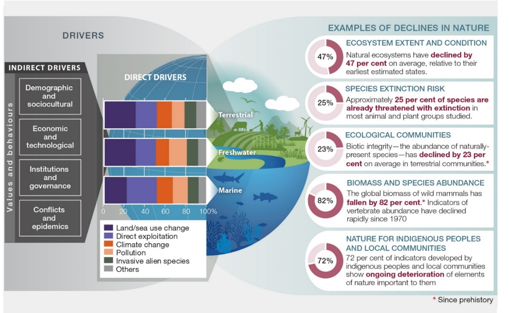
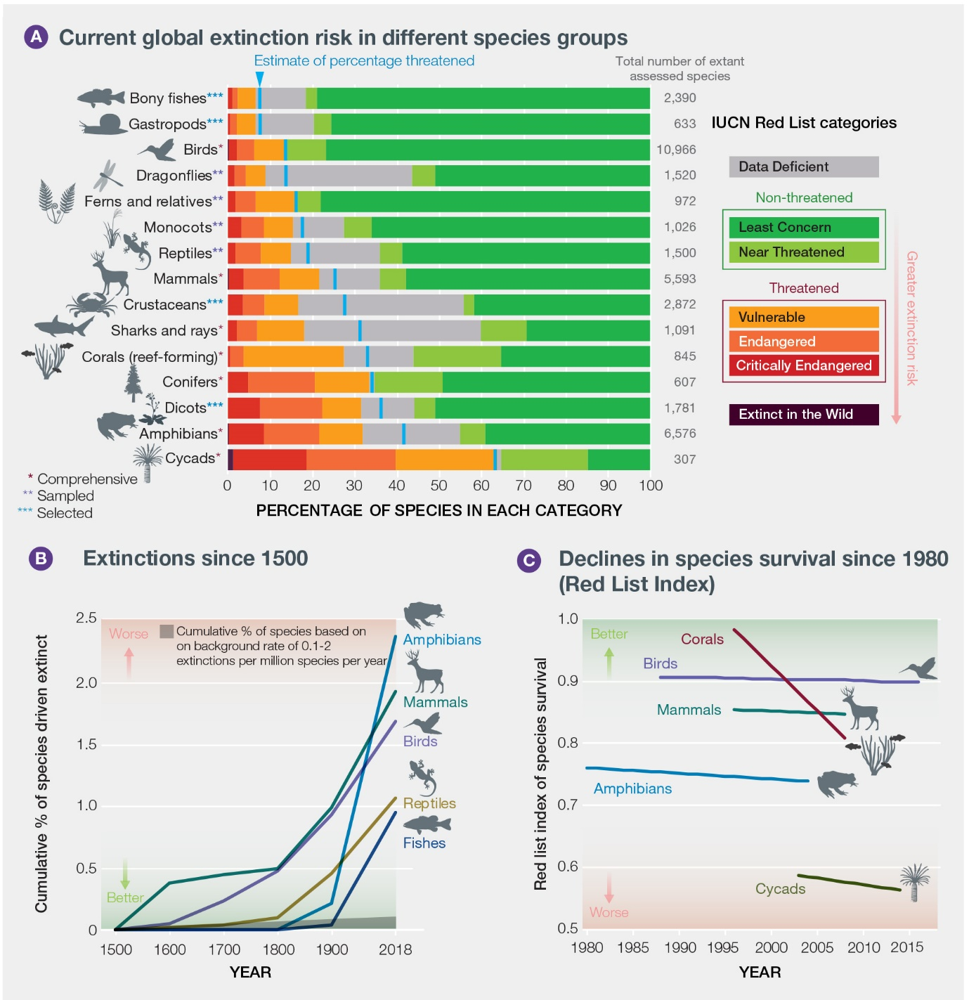
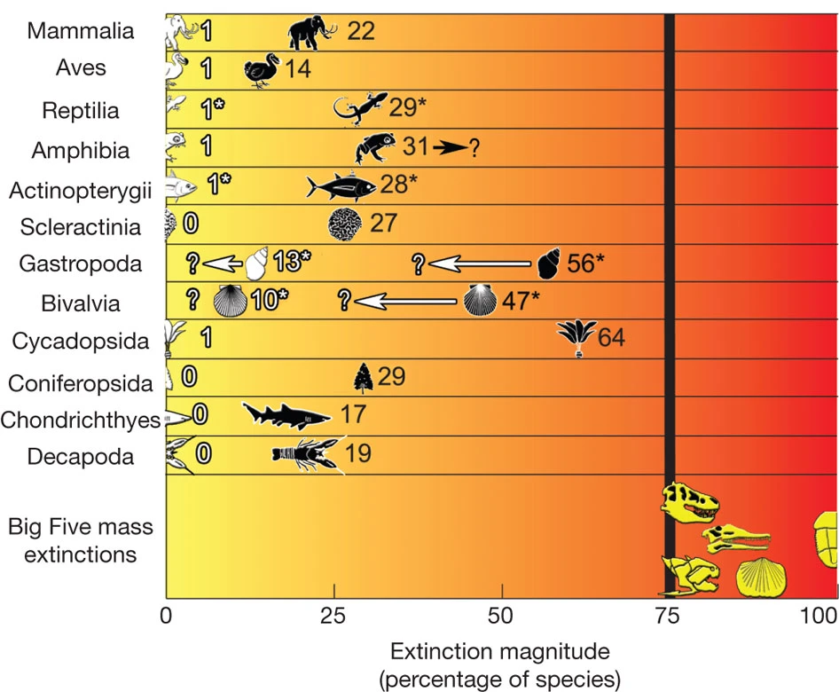
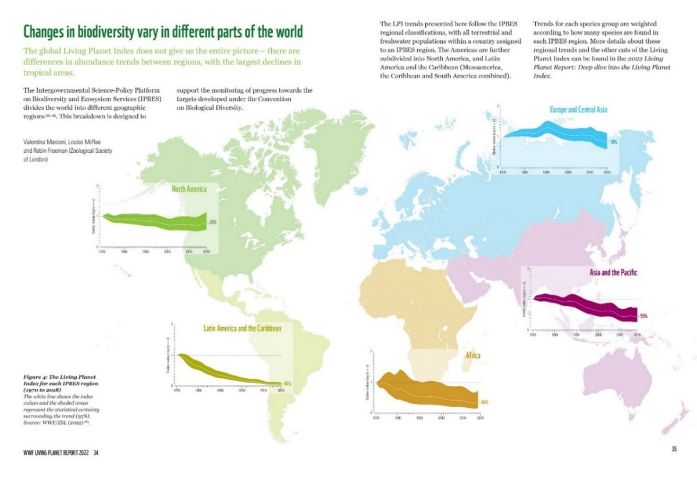

”A thing is right when it tends to preserve the integrity,
stability, and beauty of the biotic community.
It is wrong when it tends otherwise.“
Aldo Leopold, A Sand County Almanac, 1949.
7. פגיעה בביוספרה#
היכולת של בני האדם להתקיים על כדור הארץ מושפעת מאד מיחסי הגומלין בין הביוטה (יְצוּרָה - צמחים, בעלי חיים ומיקרואורגניזמים) לסביבות החיים שלהם ביבשה, במים ובאטמוספרה. כלומר, לביוטה יש תפקיד משמעותי בקביעת תנאי המחיה על פני הכדור והיא אינה בבחינת דייר פאסיבי של כדור הארץ. הדוגמא הבולטת ביותר להשפעה של הביוטה על תנאי הסביבה היא הרכב האטמוספרה הנוכחי, כ-80% חנקן וכ-20% חמצן. כל העדויות המצויות בידנו מצביעות על כך שבראשית חייו היתה לכדור הארץ אטמוספרה עם הרכב שונה לחלוטין, שבשלב מסוים כללה בעיקר פד“ח (פחמן דו חמצני – \(\ce{CO2}\)), וריכוז החמצן החופשי בה היה אפסי. בעקבות הופעתם של מיקרואורגניזמים המבצעים פוטוסינתיזה (photosynthesis),[1] בשילוב עם קבורה משמעותית של חומר אורגני (ראו פרק 3) שנוצר בתהליך הפוטוסינתזה, ובנוסף השקעה של שלדים קרבונטיים[2] (תהליך המסלק פד“ח מן האטמוספרה), ריכוז החמצן עלה, ריכוז הפד“ח ירד, והאטמוספרה הגיעה להרכבה הנוכחי. להרכב זה יש השלכות ההתפתחותיות והמטבוליות, למשל נשימה אירובית שאפשרה את התפתחותם של יצורים רב-תאיים, ובכללם יונקים ובני אדם. מעבר לכך, הולך ומתברר שבריאות בני האדם, בריאות הסביבה ובריאות בעלי החיים, מבויתים ופראים קשורים זה בזה, ויש לטפל בהן במשולב.[3] הפרק הזה מתחיל מסקירת מושגי היסוד בחקר יחסי הגומלין בין הביוטה והסביבה (7.1) ובפגיעה של בני האדם במערכות אקולוגיות טבעיות דרך התחממות גלובלית, החדרת מינים פולשים, פגיעה במאביקים (7.2). לאחר מכן נבחן את האם מדובר בהכחדת מינים קטסטרופלית – ההכחדה השישית (7.3) ונסביר מדוע יש חשיבות עליונה לשמור על המגוון הביולוגי (7.4). נסיים עם סקירת ההיסטוריה של התנועה להגנת הטבע (7.5) ונבחן את כיווני ההתמודדות העכשוויים (7.6).
מבוא ומושגי יסוד#
לבני האדם יש השפעה ניכרת על יחסי הגומלין בין הביוטה לסביבת החיים שלה. השפעתם החלה כבר לפני אלפי שנים אולם מאז המהפכה התעשייתית השפעה זו הלכה והתעצמה. זהו המוקד של הפרק הנוכחי ושל פרק 8, תוך שימת דגש על השפעת האנושות על תהליכים המתרחשים בסביבות טבעיות כגון יערות, סוואנות, ביצות ואחו-לח וכן בקרקעות. בהמשך הספר נדון בהשפעת האנושות על תהליכים המתרחשים בגופי מים מתוקים (פרק 9), באוקיינוסים (פרק 10), באטמוספרה (פרק 11), ובסביבה העירונית (פרק 12). יחסי הגומלין בין אורגניזמים לסביבתם ובינם לבין עצמם הם מושא המחקר של התחום המדעי הנקרא אקולוגיה.[4] בתחום האקולוגיה עצמו ישנם תתי תחומים, ביניהם אקולוגיה יישומית המבקשת לפתור בעיות ב“עולם האמיתי“ תוך שימוש בעקרונות אקולוגיים ותובנות אקולוגיות (לדוגמא – אקולוגיה של שמירת טבע). לפני מספר עשורים הציע הפילוסוף ארני נאס (Naess) להבחין בין אקולוגיה רדודה לעומת אקולוגיה עמוקה (Deep and shallow ecology).[5] על פי גישתו, ניתן לבחון את ערכם של מין ביולוגי, אוכלוסייה,[6] או מערכת אקולוגית (אקוסיסטמה)[7] דרך שתי פריזמות: האחת מייחסת להם ערך פנימי-אינהרנטי שאינו תלוי באדם (אקולוגיה עמוקה - deep ecology), והשנייה בוחנת את ערכם התועלתני והכלכלי כספקי שירותים לאנושות (אקולוגיה רדודה - shallow ecology), מה שמתבטא ב“שירותי המערכת האקולוגית“ (ראו בהמשך).[8] המגוון הביולוגי (biodiversity) הינו מושג מפתח בקביעת הערך הפנימי והערך השימושי של מערכת אקולוגית. המגוון הביולוגי הוא ביטוי של השונות הקיימת בעולם החי בכל הרמות, החל משונות גנטית, שונות פנוטיפית (הביטוי הפיזי של תכונה גנטית באורגניזם), שונות בין מינים (מגוון מינים), שונות בין חברות, וכולי.[9] המגוון הביולוגי הוא גורם מרכזי ביכולת העמידות (resilience)[10] של המערכת האקולוגית וביכולתה להתאושש מפגיעה (recovery).[11] עד לאחרונה היה מקובל להניח שמגוון ביולוגי אחראי גם על מגוון התפקודים של המערכת (למשל, קיבוע פד“ח, מחזור נוטריינטים, הספקת מזון). ב-2024 התפרסם מאמר שהראה שלא קיים קשר בין מגוון ביולוגי ומגוון תפקודי בקרוב לשני מיליון חלקות של צמחים ברחבי העולם.[12] כלומר, על מנת להבטיח את עמידותן של מערכות אקולוגיות צריך לוודא שהן המגוון הביולוגי והן המגוון התפקודי נשמרים, לפחות לגבי צמחים ביבשה.
פגיעת בני האדם במערכות אקולוגיות טבעיות#
פגיעה במגוון הביולוגי#
בעקבות הצגת הקונספט של גבולות פלנטריים ב-2015 (ראו הגדרה בפרק המבוא), התפרסמו מחקרים המצביעים על כך שפגיעה בשטחים פתוחים היא הגורם העיקרי לפגיעה במגוון המינים, ומחקר שפורסם ב-2016 ניסה להציג הערכה כמותית לפיה הפגיעה במגוון המינים קרתה ב-58% משטח כדור הארץ, ועקב כך נחצה הגבול הפלנטרי של מגוון המינים. מחקר נוסף מ-2019 הרחיב טענה זו גם לגבי אזורים מוגנים.
עבודות מקיפות של האו“ם,[13] שחלקים מהן הופיעו במאמר של סנדרה דיאז (Diaz) ושותפיה[14] מ-2019 מונות את הגורמים הסביבתיים העיקריים הפוגעים בתפקוד מערכות אקולוגיות ובמגוון הביולוגי (איור 7.1). ממצאים דומים התפרסמו בדוח[15] מקיף של ה-WWF ב-2024 ובמאמרים נוספים שהתפרסמו ב-2025.[16] כפי שרואים באיור 7.1, ישנם גורמים עקיפים (דמוגרפיים, חברתיים, כלכליים, טכנולוגיים, פוליטיים, מנהליים, וכן מלחמות ומגיפות) המובילים לסדרה של תהליכים (שינוי שימושי קרקע, ניצול יתר, שינוי אקלים,[17] זיהום,[18] חדירת מינים פולשים ועוד) הגורמים לפגיעה ישירה בטבע. אחת המסקנות החשובות של עבודה זו, כפי שרואים באיור, היא שהפגיעה החמורה ביותר (82%) היא בנפיצות של מינים מסוימים (evenness). [19] כלומר, יש מצד אחד מינים שמספר פרטיהם גדל מאד (המבויתים – ראו פרק 2) ומצד שני כאלה שנדחקו מאזורי המחיה שלהם, ולכן מספר פרטיהם צנח. מסר חשוב נוסף שעולה מהמחקרים שצוינו למעלה, הוא שמשבר הסביבה הוא תלת-ראשי: משבר אקלים, פגיעה במגוון הביולוגי, וזיהום הסביבה. שלושת ההיבטים הללו קשורים וכרוכים אחד בשני ויש לטפל בהם במשולב. כמו כן, במאמר של דיאז ושותפיה מופיעה הערכה לסיכויי הכחדה ולפגיעה בתפוצת מינים לפי קבוצות טקסונומיות (כגון, פטריות, צמחים, חסרי חוליות, בעלי חוליות - איור 7.2). איור 7.2 מראה למשל, את הסכנה החמורה המאיימת על הציקאסאים,[20] ובמידה פחותה אך משמעותית על דו-חיים. הוא גם מציג את האחוז המצטבר של ההכחדות בפועל מאז שנת 1500: כ-2.5% ממיני הדו-חיים, כ-2% מהיונקים, 1.5% מהעופות וכ-1% מהדגים והזוחלים הוכחדו. לבסוף, האיור מדגים את ההרעה במצב השרידות של מספר מינים הנמצאים בראש רשימת המינים בסכנה - הרשימה האדומה של IUCN.[21] ברשימה זו בולטת ההרעה המהירה במצבם של אלמוגים החל משנות התשעים של המאה הקודמת ועד 2010 (ראו פרק 10). דוח של ה-IUCN משנת 2023 מחזק את הטענות הללו ומדבר על כך שכ-28% מכלל המינים הידועים לנו נמצאים בסכנת הכחדה,[22] ובאותה שנה הוסרו 21 מינים מהרשימה האדומה משום שכל העדויות מצביעות על כך שהם כבר נכחדו.[23] הערכה נוספת היא שכ-680 מינים של בעלי חוליות הוכחדו בארבע מאות השנים האחרונות, וכמיליון מינים של יצורים חיים נמצאים בסכנת הכחדה ממשית.[24]
מדד ה“החיים בפלנטה“ (Living Planet Index - LPI)[25] מציג זווית מעט שונה על מצב הביוטה בכדור הארץ, ומנסה לכמת את מצב המגוון הביולוגי על פני כדור הארץ. מידי שנתיים מתפרסמים נתוני המדד המהווים כלי לבחינת העמידה ביעדי שמירת הטבע. הדוח שפורסם ב-2022 זכה לפרשנויות מגוונות ולעיתים סותרות. זאת משום שמדד ה“החיים בפלנטה“ כורך בתוכו פרמטרים כמו הכחדה, ירידה במספר הפרטים, מגוון המינים ומידת פיזורם במרחב. קשה מאד לסכם את כל המדדים הללו בצורה כמותית וחד משמעית, ולכן יש להתמקד בעיקר במגמות, תוך השוואה בין אזורים שונים ובין מינים שונים.[26] כמו כן יש לבחון בקפידה מגמות של מיני מפתח ,למשל פרפרים[27] או דו-חיים. כך למשל עולה מהדוח כי הירידה בגודל אוכלוסיות חיות הבר היא כלל עולמית, אך היא בולטת בעיקר במינים של דו-חיים (כפי שמופיע גם במאמר של דיאז ושותפיה מ-2019). עוד עולה שהרס של בתי גידול טבעיים הוא הגורם העיקרי לפגיעה בצמחים ובחיות הבר. מדובר בין היתר בהקמת סכרים היוצרים שינויים באפיקי הזרימה של נהרות (ראו פרק 9), הפיכת שטחים פתוחים לשדות חקלאיים, וכריתת יערות (ראו פרק 8). הדוח גם מצביע על כך שצייד בלתי חוקי מהווה מפגע נוסף (מה שמתועד גם במחקרים אחרים),[28] בעיקר לגבי יונקים, דגים ועופות. כך למשל נטען שצייד אחראי על מעל מרבע מקרי המוות של בעלי חוליות,[29] ודייג יתר אחראי על ירידה של כשליש בתפוצה של דגי מים מתוקים נודדים, הנמצאים בסכנת הכחדה באופן כללי.[30] גם סחר לא חוקי בבעלי חיים וצמחים גורם לפגיעה בקנה מידה עולמי.[31] לבסוף, בהרבה מחקרים נטען ששינויי אקלים גורמים לפגיעה במינים רבים,[32] בין היתר עקב התייבשות גופי מים ושינוי ביחסיי הדדיות (mutualistic interaction) בין מינים שונים.[33] עדות לפגיעה במגוון המינים עקב הסיבות שצוינו למעלה מופיעה במאמר שפורסם ב-2019 ושתיעד את הידלדלות אוכלוסיות העופות בצפון אמריקה,[34] ירידה של כמעט שליש במספר הפרטים (כשלושה מיליארד עופות), כולל פרטים של מינים נפוצים שאינם נמצאים בסכנת הכחדה, כאשר הפגיעה חמורה יותר דווקא באזורים שבהם המין הנחקר נפוץ יותר.[35] מדד נוסף שפותח לאחרונה נקרא ” מדד שמירת הטבע - NCI“.[36] מדד שמירת הטבע הוא כלי להערכת האפקטיביות של מאמצי השימור ב-180 מדינות. המדד משתמש ב-26 מדדי מפתח כדי להעריך את המגוון הביולוגי ורמת השימור. הוא בוחן גורמים שונים כמו היקף האזורים המוגנים, מינים בסיכון, חוקי שימור ומגמות עתידיות. מבט מפורט זה עוזר לזהות בעיות, לעקוב אחר התקדמות ולקבל החלטות טובות יותר בנוגע להגנה על הטבע וקידום פיתוח בר-קיימא.
כפי שנאמר למעלה, פגיעה בשטחים פתוחים בכלל ובשטחים מוגנים בפרט, למשל עקב קיטוע[37] - fragmentation היא הגורם המרכזי לפגיעה במגוון הביולוגי. לראייה, במחקר שעוסק בהגנה על ציפורי בר הודגמה חשיבות הבחירה הנכונה של השטחים עליהם יש לשמור על מנת להגן על ציפורים נודדות.[38] רק 9% מ-1450 סוגי ציפורים נודדות נהנות משטחים מוגנים המותאמים למסלולי נדידתן, בעוד ש-45% מן הציפורים שאינן נודדות נהנות משטחים מוגנים במידה מספקת למנוע איום על התפוצה שלהן. מחקר שהתמקד בביוטה של גופי מים מתוקים הראה שרבע מכלל היצורים נמצאים בסכנת הכחדה,[39] ושהסיבות העיקריות לכך הן פגיעה בבתי גידול עקב שאיבות יתר, סכרים, מינים פולשים, זיהום[40], ודיג יתר. אולם התצפית המטרידה ביותר היא שהסתמכות על מיני מפתח (tetrapods),[41] אינה נותנת תמונה אמינה דיה של העקה בה נמצאים יצורים אחרים. לאור זאת, ישנם מחקרים הטוענים שרק שילוב מגמות-שינוי במספר מדדים (species abundance ,richness,[42] extinction risk, distribution, genetic variability, species turnover,[43] and trait diversity[44]) יצליח לתאר בצורה מלאה ומקיפה את הפגיעה במגוון המינים ומתן שירותי המערכת האקולוגית.[45]
{kind=link}

Fig. 62 איור 7.1: התרומה של גורמים עקיפים (דמוגרפים, חברתיים, כלכליים, טכנולוגיים, פוליטיים, מנהליים, מלחמות ומגיפות) על הגורמים הישירים (שינוי שימושי קרקע, ניצול יתר, שינוי אקלים, זיהום, חדירת מינים פולשים וגורמים אחרים) המביאים לפגיעה בטבע (גודל מערכות אקולוגיות, הכחדת מינים, חברות אקולוגיות, ביומסה ו-evenness, קהילות מקומיות וילידים) במערכות אקולוגיות יבשתיות, מימיות (מים מתוקים), וימיות. מקור – IPBES (2019) IPBES. Reprinted with permission.#
{kind=link}

Fig. 63 איור 7.2: סכנת ההכחדה ופגיעה במגוון של פטריות, צמחים, חסרי חוליות, בעלי חוליות. שימו לב לחלונות הזמן השונים באיורים B ו-C. מקור – IPBES (2019) IPBES. Reprinted with permission.#
השפעת שינויי אקלים על מערכות אקולוגיות#
לשינויי האקלים יש השפעות מרחיקות לכת על המערכת האקולוגית,[46] ויש הרבה דוגמאות לשינויים שכבר נצפו בפועל במערכות אקולוגיות שונות, הן כתוצאה של התחממות או התקררות.[47] הנה מספר דוגמאות: (1) העתקה של טווח התפוצה של מינים רבים, הן לאזורים גבוהים יותר טופוגרפית והן לאזורים מרוחקים יותר מקו המשווה;[48] (2) שיפור יכולת האבקה של צמחים באמצעות רוח[49] בגלל פער גדול יותר בטמפרטורות בין אתרים שונים באותו אזור; (3) עלייה בסיכון הצפוי לעצים ביער טרופי,[50] לבעלי חוליות יבשתיים[51] ולבעלי ”דם קר“[52] עקב אירועי קיצון של טמפרטורה; (4) התפשטות מלריה לאזורים גבוהים יותר באפריקה עקב ההתחממות הגלובלית;[53] (5) השפעה אפשרית של הפשרת קרקעות קפואות (permafrost) על התנהגות מיקרואורגניזמים הנמצאים בהן;[54] (6) התפשטות היער הצפוני לערבות הטייגה, דבר המשפיע על החזר הקרינה (אלבדו) של האזור;[55] (7) שינויים ניכרים בעיקר ברמות ההזנה (trophic levels) הנמוכות עקב שינויי אקלים בדגש על עונת הפריחה/התרבות. כמו כן תועדו הבדלים בין מינים שונים הנמצאים באותה הקבוצה, דבר שעלול להביא לשינויים בהרכב המינים;[56] (8) שינויים בהרכב ובנפיצות אוכלוסיות של ציפורים;[57] (9) מעברים בין סוואנות ליערות באפריקה;[58] (10) סכנת הכחדה של מינים מסוימים עקב שינויי אקלים.[59] חשוב לזכור שלא כל השינויים הם בהכרח שינויים לרעה. חלק מהשינויים שנצפו הם פשוט שינויים במערכת האקולוגית, ומעבר מצורת תפקוד מסוימת לצורת תפקוד אחרת. חשוב גם לזכור ששינויים מסוג זה קרו לאורך ההיסטוריה של כדור הארץ, רובם ללא קשר לפעילות אנושית בעקבות התפרצויות געשיות, פגיעת מטאוריטים ושינויי אקלים, הן בתקופות קרח והן בתקופות חמות אף יותר מהתקופה הנוכחית (פרק 6).
חלק מהמחקרים מנסים לבסס את התחזיות שלהם על בסיס שינויים שחלו בהרכב המינים במהלך שינויי אקלים בעבר, למשל, במעבר מתקופת הקרח האחרונה לתקופה הבין-קרחונית הנוכחית (לפני 14 אלף שנה), ומזהירים שללא מאבק בהמשך ההתחממות הגלובלית, צפויים לקרות שינויים רחבי היקף, בעיקר באוכלוסיות של ביוטה יבשתית,[60] למשל עלייה בנפיצותם של חד-שנתיים.[61] מחקרים אחרים אף טוענים שיש הערכת חסר של השפעת ההתחממות הגלובלית על הנזק לביוטה, בעיקר משום שחלק מהנזקים הצפויים אינם גדלים באופן לינארי בעקבות התחממות גלובלית ועלולים לגרום למשוב חיובי שיגביר את עוצמתם.[62] השוואה מעניינת נעשתה בין השפעת שינויי אקלים בעבר (מחזורים של תקופות קרחוניות ובין קרחוניות) להשפעת שינויי אקלים בהווה ובעתיד על מגוון המינים (בעיקר היבשתיים).[63] מחברי המאמר בו הופיעה השוואה זו מדגישים שלשינויי הטמפרטורה הצפויים בעתיד תהיה השפעה מרחיקת לכת על תפוצת המינים והרכבם וכתוצאה מכך גם על שירותי המערכת האקולוגית. מעבר לכל זה, חוקרים רבים טוענים שעל מנת לייעל את ההתמודדות עם שינויי אקלים, יש לבצע ניטור ממושך של שיטות ואופני הפעולה בהם אנו נוקטים ולבחון אותם בצורה קבועה.[64]
מינים פולשים#
אחת מחמש הסיבות שפורטו באיור 7.1 לפגיעה במגוון המינים, היא חדירה של מינים פולשים, מינים אופורטוניסטים ומינים מלווי אדם.[65] בשנים האחרונות נעשו מספר מחקרים שהראו כי הפגיעה במגוון המינים על ידי מינים פולשים מתבטאת בנזק כלכלי ניכר.[66] החדירה של מינים פולשים קורית בגלל מספר סיבות: הורדת חסמים גיאוגרפיים (מנהרות, גשרים, תעלות); מי נטל של אוניות; הכנסת מינים זרים למטרות של נוי, או שימוש בהם לעצירת חולות, הדברה ביולוגית, ייעור, גינון ועוד. הפצת מינים פולשים היא תופעה הנמשכת כבר אלפי שנים, אולם היא צברה תאוצה בעשורים האחרונים,[67] והיא כוללת גם מעבר מיקרואורגניזמים, בין היתר בגלל תנועת תיירים.[68] סחר בינלאומי ומעבר סחורות למדינות עשירות מהווה גם הוא וקטור למינים פולשים בעיקר ממדינות מתפתחות,[69] כולל הפצה של מחלות הפוגעות במינים מקומיים. חשוב לציין שבמקביל להאצה בהפצת מינים פולשים, חלה גם עלייה במודעות ובתיעוד התופעה. לפי דוח של ה-IPBES משנת 2023, פעילויות בני האדם שפורטו למעלה גרמו ליותר מ-37 אלף מינים להפוך לפולשים, כאשר קצב הפלישה הוא כ-200 מינים בשנה.[70] מתוך כלל המינים הפולשים, ל-3,500 מהם (כ-10%) יש השפעות שליליות על המערכות האקולוגיות אליהן פלשו. ב-16% ממקרי ההכחדה, מינים פולשים הם הסיבה הבלעדית. קצב הפלישה וכמות הנזק הנגרם נמצאים בעלייה מתמדת, ומהווים סכנה גוברת למצבן של מערכות אקולוגיות רבות. פלישת מינים עקב פעילות בני אדם גם מגבירה את הרגישות לאירועי הכחדה.[71] בנוסף, פעילות בני האדם גורמת לשינויים בפיזור בעלי חיים ולתהליך של הומוגניזציה של מינים, למשל בהשוואה לתפרוסת המינים שתועדה במאה התשע עשרה.
להלן כמה דוגמאות לנזק שגורמים מינים פולשים: מחלת ה-chytridiomycosis panzootic שמקורה בפטרייה פולשת, גורמת לפגיעה קשה ביותר בדו-חיים.[72] יש הטוענים שפגיעתה של מחלה זאת התגברה עקב התחממות גלובלית.[73] דוגמא ידועה נוספת למין פולש היא צדפת הזברה שפלשה לאגמים הגדולים של אמריקה מאירו-אסיה בשנות השמונים של המאה שעברה. בהיעדר אויבים טבעיים, גדל מאד מספר הצדפות. הצדפות סתמו מעברי מים, סיננו את המים וגרמו לירידה בעכירות מי האגמים, מה שגרר פגיעה בחלק מהדגים, וביניהם מספר מינים אנדמיים. דוגמא נוספת היא חיפושית (emerald ash borer) שהגיעה מצפון מזרח אסיה לצפון אמריקה וגרמה שם לפגיעה נרחבת בעצי אפר (Ash tree).[74]
פלישת מדוזות באופן כללי (פרק 10) ופלישתה של המדוזה החוטית הנודדת למזרח הים התיכון (פרק 14) היא דוגמא מטרידה ביותר של פלישת מין שנזקו האקולוגי והכלכלי רב. דוגמא נוספת מיני רבות של מין פולש בישראל הוא הצמח טיונית החולות (Heterotheca subaxillaris) שהשתלטה על שטחים נרחבים במישור החוף של ישראל. טיונית החולות הגיעה לישראל בשנות השבעים של המאה העשרים מדרום-מזרח ארצות הברית או מקסיקו.[75] במהלך השתלטותה על בתי גידול במישור החוף היא גם הפכה מצמח חד-שנתי לצמח רב-שנתי ואף הגיעה לאזורים מרוחקים ממישור החוף.[76] סיפור דומה הוא סיפורה של השיטה המכחילה (Acacia saligna)[77] שיובאה מאוסטרליה לפלשתינה על ידי הבריטים, בין השאר כדי לעצור נדידת חולות. ראו גם את הדיון בפרק 2 על השפעתה של פטרייה פולשת על תמותת תינוקות בארצות הברית.[78] בהקשר של מינים פולשים ראוי לציין גם את הנושא של ”מינים מתפרצים“. אלה מינים של חיות וצמחים שבעקבות השפעת בני האדם (הכחדת טורפים, מזון זמין, ועוד) הם מתרבים במהירות רבה ועלולים להפוך למטרד בסביבות מסוימות בהן יש להם יתרון אקולוגי (למשל הסביבה העירונית – ראו פרק 12, וכן פרק 14).[79]
פגיעה במאביקים#
פגיעה בחרקים מאביקים הינה נושא נוסף המושך תשומת לב מדעית וציבורית רבה בגלל האיום על אספקת מזון לבני אדם.[80] כ-75% מצמחי המאכל תלויים במידה מסוימת בפעילות מאביקים, כאשר כ-7% משווי התוצר החקלאי (כ-350 מיליארד דולר בשנה) תלוי ישירות במאביקים, לדוגמא קפה, קקאו ושקדים.[81] כתוצאה מכך ישנם אזורים כמו צפון אפריקה, המזרח התיכון ומזרח אסיה בהם החקלאות תלויה מאד במאביקים. בנוסף לתרומה לגידול מזון, למאביקים תפקיד חשוב ברבייה של צמחי בר. בשנים האחרונות מתרבות העדויות על הנזק שנגרם למאביקים עקב השימוש בחומרי הדברה,[82] בעיקרneonicotinoids and fipronil שהוזכרו בפרק 2 וכן מדבירים אחרים,[83] אך גם בגלל שינויי אקלים,[84] שריפות יער[85] וייתכן שגם בגלל שילוב של שינויי אקלים ומינים פולשים (למשל, נמלים).[86] כצפוי, הנזקים הנגרמים על ידי מדבירים אינם נעצרים בפגיעה במאביקים. עקב השימוש הגובר במדבירים כמו fipronil שהם ספציפיים לחרקים, נפגעים גם הרבה מיני ציפורים הניזונות מחרקים.[87] כמו כן, מתרבות העדויות על הצטברות של חומרי הדברה בקרקע באמצעות ספיחה על פני חלקיקי הקרקע ולאחר מכן הסעה שלהם הרחק משדה המטרה כולל למקווי מים, שם הם פוגעים במיני חרקים שאינם מזיקים לחקלאות. תשומת לב מיוחדת מוקדשת לפגיעה בדבורים, בעיקר, אך לא רק דבורי דבש (יש כ-20,000 סוגים שונים של דבורי בר).[88] בשנת 2025 דווח על הפגיעה החמורה ביותר שתועדה בכוורות דבורים בארצות הברית. בין יתר הסיבות, מחברי הדוח מציינים פגיעה קשה במקורות המזון הטבעיים של הדבורים.[89] לאחרונה הועלתה השערה שזיהום אוויר חלקיקי (ראו פרק 11) מקטין את מידת הפולאריות של האור ומקשה על דבורים למצוא את דרכן, מה שעלול להחריף את הפגיעה ביכולת ההאבקה שלהן.[90]
ההכחדה השישית?#
אחת השאלות הבוערות ביותר כיום בחקר הסביבה היא האם אנחנו בפתחו של אירוע הכחדת מינים, שישי במספר? בעבר הגיאולוגי אירעו אירועי הכחדה רבים של מינים שחיו על פני כדור הארץ. יש הטוענים שמידי כמה עשרות מיליוני שנה היה אירוע הכחדה[91] עקב פגיעה של מטאוריטים או התפרצויות וולקניות אדירות שבעקבותיהן היו שינויי אקלים חריפים.[92] אולם, רוב החוקרים מסכימים על כך שבין ארועי ההכחדה הרבים, היו חמישה אירועי הכחדה עיקריים שבכל אחד מהם נעלמו מהתיעוד הגיאולוגי עשרות אחוזים ממשפחות החיים. לאחר מכן, במשך מספר מיליוני שנים, הן הוחלפו על ידי משפחות חדשות של יצורים. חשוב להדגיש שרוב התיעוד המצוי בידנו מאירועי העבר מבוסס על שלדים של יצורים ימיים שנשמרו יותר טוב מהיבשתיים. האירוע הראשון (OS) קרה בסוף תור האורדוביק (Ordovician), לפני כ-445 מיליוני שנה, כמאה מיליון שנה אחרי ההופעה הראשונה של יצורים רבי תאים המשקיעים שלד. בתקופה הזאת עדין לא היו חיים על היבשות. אירוע ההכחדה השני (DC) קרה כמאה מיליון שנה אחר כך (לפני כ-360 מיליון שנה), בסוף תור הדבון (Devonian). אירוע ההכחדה השלישי והגדול ביותר (PT) קרה לאחר כמאה מיליון שנה (לפני כ-250 מיליון שנה), בסוף תור הפרם (Permian), שהוא גם סוף עידן החיים הקדמונים (Paleozoic). אירוע ההכחדה הרביעי (TJ) קרה כחמישים מיליון שנה מאוחר יותר (לפני כ-200 מיליון שנה), בסוף תור הטריאס (Triassic). אירוע ההכחדה החמישי (KT) קרה כמאה וחמישים מיליון שנה אחר-כך (לפני כ-65 מיליון שנה), בסוף תור הקרטיקון (Cretaceous), שהוא גם סוף עידן החיים האמצעיים (Mesozoic), והוא האירוע הידוע ביותר, סוף עידן הדינוזאורים. השאלה מה היו הסיבות לאירועי ההכחדה מעסיקה את החוקרים כבר עשרות שנים, ונכתבו על כך אלפי מאמרים. הסיבות נעות בין פגיעת מטאוריטים, פעילות וולקנית חריגה ושינויי אקלים. לאחרונה התפרסם מאמר הטוען שההכחדה הגדולה ביותר (PT) קרתה בעקבות סדרה של ארועי אל-ניניו (El Niño)[93] שהובילו להתחממות קיצונית בקנה מידה עולמי.[94] מחקר שהתפרסם באותו חודש מציג את הרקורד של הטמפרטורה של כדור הארץ ב-485 מיליון השנה האחרונות ולפי ממצאיו אכן האירוע של ה-PT היה מלווה בהתחממות משמעותית. אולם שאר ארבעת ארועי ההכחדה הגדולים לא קרו בתקופות של טמפרטורות גבוהות במיוחד, ואילו בתקופות שבהן שררה טמפרטורה גבוהה במיוחד בכדור הארץ (אף גבוהה מזאת ששררה ב-PT) לא היו ארועי הכחדה משמעותיים.[95]
כבר עשרות אלפי שנה דוחקים בני האדם את רגליהם של הטורפים הגדולים וקיימות עדויות להכחדה שלהם (ושל יונקים גדולים אחרים) מאזורים שונים בכל היבשות, לעיתים עד כדי היעלמות מוחלטת (כמו באמריקה למשל).[96] המגמה הזאת נמשכת ואף מחריפה כיום (איורים 7.1, 7.2), והיא מסכנת גם יצורים קטנים יותר ופחות בולטים. כפי שצוין קודם, יש תיעוד שכ-680 מינים של בעלי חוליות נכחדו במאות השנים האחרונות. הלחץ שבני האדם מפעילים על הביוטה מחייב מעקב ותיעוד על מנת למנוע את המשך ההכחדה של מינים נוספים שחלקם, כאמור, בולטים פחות אולם הם בעלי חשיבות גדולה בשמירת התפקוד של מערכות אקולוגיות.[97] מאמץ רב מוקדש כיום למעקב, תיעוד ומניעה של הכחדת מינים הנמצאים ברשימה האדומה של IUCN. [98]אבל בהקשר זה יש להבחין בין מינים שהם מיני מפתח, הקריטיים לתפקוד המערכת האקולוגית, לעומת כאלה שתרומתם דומה למינים אחרים, וחשיבותם יכולה לבוא לידי ביטוי במידה והמערכת תעבור שינויים (למשל התחממות גלובלית) שמין מסוים מותאם לה יותר ממינים אחרים. הבעיה העיקרית בהשוואה של מצב הביוטה בהווה עם אירועי ההכחדה בעבר נובעת מההבדל בפרק הזמן במהלכו תועדו השינויים - אלפי שנה בודדים בהווה לעומת מיליוני שנה בעבר, בקושי לתעד שינויים בעבר ברזולוציה של זמנים קצרים (מאות או אלפי שנה) ובמידת השימור[99] של מאובנים מן העבר, שהיו, כאמור ימיים ברובם.[100] ביטוי לכך ניתן באיור 7.3, שבו מוצגים מספר המינים שהוכחדו או הנמצאים בסכנת הכחדה בהווה וכן אלו שהוכחדו באחד מחמשת אירועי הכחדה העיקריים בעבר.[101]
מטעם זה, רבים טוענים שבדיון המתקיים לגבי סכנת הכחדת המינים העכשווית, נכון יותר להתמקד בירידה במספר הפרטים של מינים שונים (השפע היחסי - evenness), במינים פולשים או במדדים אחרים שקל יותר לתעד בחלון הזמן המצומצם שעומד לרשותנו, ולא להתמקד אך ורק בתיעוד המינים שכבר נכחדו.[102] כמו כן נטען שיש להשוות בין המצב במערכות אקולוגיות שונות (ימיות מסוגים שונים, יבשתיות מסוגים שונים וגופי מים מתוקים), [103] ולתת את הדעת לכך שלעיתים צריך להתייחס בנפרד לאוכלוסיות שונות של אותו מין, למשל פילים של סוואנות מול פילים של יערות.[104] לבסוף, יש להכיר בכך שהמצב מחמיר ושהכחדת המינים קשורה לנזקים סביבתיים וחברתיים מגוונים.[105] לאחרונה הוצע להתמקד בפרמטרים כלליים יותר כמו למשל יחס מוטציה-שטח (mutations-area relationship- MAR) [106] שהוא אנלוגי ליחס מין – שטח (species-area relationship - SAR) [107]בו מקובל להשתמש כמדד כללי נוסף.[108] אחת הדוגמאות לבעייתיות של תיעוד ההכחדות בהווה ההיא ההופעה המחודשת של מינים שהוכרזו בעבר נכחדים, וכן תיעוד של מינים חדשים למדע, במקומות שכבר נחקרו בעבר.[109]
במסגרת הדיון בהכחדות, ראוי להזכיר שתי היפותזות מעניינות ומנוגדות אחת לשנייה. בשנות השבעים של המאה הקודמת פרסמו לבלוק (Lovelock) ומרגוליס (Margulis) סדרה של עבודות המצביעה על ההשפעה הדו-כיוונית שבין הביוטה והתנאים השוררים על פני השטח של כדור הארץ (טמפרטורה, קרינת שמש, פיזור האנרגיה). הם טענו שלביוטה יש יכולת לייצב את תנאי המחייה על פני הכדור כולו – היפותזת ”גאיה“ Gaia Hypothesis)).[110] היפותזה שהתקבלה רק בצורתה הכללית ביותר על ידי חלק מחוקרי הסביבה. יש כאלה שהראו כיצד ניבויים של ההיפותזה אינם מתקיימים במקרים מסוימים – ראו פרק 5 בחלק על מחזור הגופרית.[111]
בניגוד לתאוריה של לבלוק ומרגוליס המדגישה את תהליך האופטימיזציה של תנאי הסביבה על ידי ביוטה, הציע וורד (Ward) את היפותזת ”מדיאה“ (Medea Hypothesis) [112]הגורסת שהכחדות הן חלק בלתי נפרד מהתפתחות החיים על כדור הארץ. וורד טוען שלמעשה החיים עצמם מביאים להכחדות, בראש ובראשונה כתוצאה מתהליכי אבולוציה מתמידים בהם מין מחליף מין מותאם פחות. בנוסף הוא טוען שרוב אירועי ההכחדה נבעו מנזקים סביבתיים שנגרמו על ידי מיקרואורגניזמים וכי רק מיעוטם נבע מפגיעות מטאוריטים או מפעילות וולקנית חזקה במיוחד. מנגנון ההכחדה העיקרי לטענת וורד הוא התחממות כדור הארץ עקב הצטברות גזי חממה, שגורמת להפסקת הערבוב של מי האוקיינוסים (נרחיב על כך בפרק 10). הפסקת הערבוב של מי הים גורמת להיווצרות של גוף מים עמוקים חסר חמצן שבו פועלים מיקרואורגניזמים אנאירוביים המייצרים גז מימן סולפיד (\(\ce{H2}\)S) רעיל ביותר, המתנדף לאטמוספרה וגורם להכחדה נרחבת וכן להעלמות שכבת האוזון הסטרטוספרי, המגינה על פני השטח של כדור הארץ מקרינה אולטרה-סגולה קטלנית (נחזור לשכבת האוזון הסטרטוספרי בפרק 11).
לסיכום, השאלה האם אנחנו בעיצומו של אירוע הכחדה משמעותי עדיין פתוחה, בעיקר משום שאין לנו את הזמן הדרוש לבחון את השאלה כפי שעשינו לגבי אירועי ההכחדה של העבר. אולם ברור כבר כיום שבני האדם גורמים לפגיעה ניכרת במגוון המינים, כשהפגיעה העיקרית היא פגיעה במידת השפע היחסי (evenness), מה שעלול להוביל להכחדה עתידית של מינים שמספר פרטיהם החיים הולך ופוחת. מעבר לכך, יעילות הצעדים בהם ננקוט כדי למנוע פגיעה באזורי מחיה וכדי להאט את קצב ההתחממות הגלובלית, תשפיע במידה רבה על עצמת הפגיעה במגוון הביולוגי בעתיד.[113] כמו כן, מסתבר שיש הטיה במאמצי ההגנה על מינים לכיוונם של מינים עם נראות ועם ”כריזמה“ (למשל יונקים גדולים וציפורים) על חשבונם של מינים קטנים שלעיתים נמצאים בסכנת הכחדה חריפה יותר (למשל, דו-חיים).[114] ראוי גם לציין שלאחרונה עלו הצעות להיאבק בהעלמות מינים ובהכחדות באמצעות שימוש בטכנולוגיות המבוססות על תאי גזע וסיוע ברבייה, כלומר להסתמך על שיקול דעת אנושי בהתמודדות עם הכחדת מינים.[115]
{kind=link}

Fig. 64 איור 7.3: החומרה של מצב הביוטה בהווה ברמת המחלקה, והשוואה לאירועי הכחדה בעבר. הקו השחור מסמן את המדד המייצג לדעת המחברים ארוע הכחדה (75% הכחדה). סימון לבן – מין שהוכחד בטבע. סימון שחור – מין הנמצא בסכנת הכחדה. סימון צהוב – מינים שהוכחדו באחד מחמשת אירועי ההכחדה הגדולים של העבר. מקור – Barnosky, et al. (2011) https://doi.org/10.1038/nature09678 ; Reprinted with permission from Nature.#
Barnosky, et al. (2011) https://doi.org/10.1038/nature09678 ; Reprinted with permission from Nature.

מדוע יש לשמור על התפקוד הביולוגי?#
שמירה על התפקוד הביולוגי מחייבת בראש ובראשונה לשמור על המגוון הביולוגי כולל מגוון המינים ובמקביל לשמור על מגוון התפקודים, כפי שצוין קודם.[117] חשוב להשתמש בהגדרה מרחיבה של המגוון הביולוגי הכוללת הן את מספר המינים (richness) והן את השפע היחסי (evenness), וכן שמגוון המינים יתקיים ברמות הזנה שונות (trophic levels).[118] חשיבות השמירה על התפקוד הביולוגי נובעת בראש ובראשונה ממתן השירותים שהביוטה מספקת לחברה האנושית.[119] ישנן עדויות רבות ומשכנעות לכך שהמגוון הביולוגי בכלל ומגוון המינים בפרט משפרים את תפקוד המערכת האקולוגית ואת יכולתה לספק את שירותים כגון: מניעת ארוזיה, מיתון אסונות טבע, קיבוע פד“ח, פרוק מזהמים, מיחזור נוטריינטים,[120] האבקה, מיתון פגיעה של מזיקים, טיהור מקורות מים, ועוד. יתרה מזאת, פגיעה במגוון המינים גוררת פגיעה ניכרת ביכולת המערכת האקולוגית לעמוד בהפרעות חיצוניות וביכולתה לחזור למבנה הקודם לאחר ההפרעה (חוסן - resilience).[121] למשל, היכולת של מערכות אקולוגיות לעמוד בפני נזקים כמו שריפות פוחתת לאחר התערבות ממושכת של בני אדם.[122] ניתן למצוא עדויות רבות לכך שמגוון המינים מעצים את היכולת של מערכת אקולוגית ספציפית להתמודד עם אירועי אקלים קיצוניים. בנוסף, מחקרים רבים בחנו את העמידות של מערכות אקולוגיות לשינויי אקלים והראו שעמידות המערכת האקולוגית להתחממות גלובלית תלויה קשר הדוק בשמירה על מגוון המינים. במילים אחרות, מערכות אקולוגיות עם מגוון מינים גדול עמידות יותר לשינויי אקלים. יתרה מזאת, יש חוקרים הטוענים ששימור מגוון המינים הוא נדבך מרכזי בפתרון משבר האקלים, יותר מהיותו קורבן של שינויי אקלים.[123] תובנה זאת גורמת לכך שכיום מושקעת מחשבה רבה בהחלטה אילו מינים לשמר בפרקים ובשמורות הטבע.
כבר שנים רבות ברור לביולוגים שתהליכי הברירה הטבעית אשר גרמו להתאמה אבולוציונית של יצורים לסביבתם, הם אלה שהביאו להגדלת השונות והמגוון הביולוגי. המגוון הביולוגי הוא שאִפשר לביוטה לשרוד במשך מיליארדי שנים ולצלוח תקופות של שינויים דרמטיים בתנאי הסביבה על פני כדור הארץ.[124] לכן, סביר מאד להניח שהם גם יחזקו את יכולת העמידות של הביוטה בעתיד. חקר האבולוציה בכלים מודרניים החל בעבודות פורצות דרך כדוגמת זו של קרל ווס (Woese) המתבססת על מעקב אחר שינויים ב-RNA הריבוזומי.[125] לדוגמא, הופעתם של צמחי 4C במיליוני השנה האחרונות בנוסף לצמחי 3C שכבר היו קיימים,[126] מדגימה את חשיבות האבולוציה וחשיבות המגוון הביולוגי. צמחי 4C התפתחו במיוקן המאוחר (לפני 8-3 מיליוני שנה) בזמן שהתרחשו כמה שינויים סביבתיים: שינויים בסוג אוכלי העשב, שינויי אקלים וירידה מתמדת בריכוזי פד“ח באטמוספרה.[127] כל אלה גרמו לכך שצמחי 4C משפרים את עמידות הצמחייה לתנאים הסביבתיים והאקלימיים בכדור הארץ בעידן המודרני (ראו את פרק 2).
אבני דרך בשמירת טבע#
כפי שהזכרנו בפרק המבוא, במהלך המאה התשע עשרה קמו בארצות הברית ובאירופה ארגונים שעסקו בשימור שטחים פתוחים למטרות שונות כמו ציד ודיג, ובשלב מסוים הוקמו גם ארגונים ששמו להם למטרה לתחם שטחים בהם נשמר הטבע הפראי בהם חל איסור על פיתוח והתערבות אנושית. השילוב של השניים הביא להקמה של גנים לאומיים בארצות שונות. מבחינה מסוימת הייתה זאת תחילתה של התנועה הסביבתית, כאשר במוקד עמדה השמירה על שטחים פתוחים ועל הצומח והחי בהם. ראויים לציון ארגונים כמו ה-Appalachian Mountain Club וה- Sierra Club בארצות הברית,
ניסיונות התמודדות עם הפגיעה במגוון הביולוגי#
בספרות המקצועית יש הכרה כי בני האדם פגעו בצורה קשה ורחבת היקף במגוון הביולוגי ויש דחיפות גבוהה לטפל בפגיעה זאת.[132] המאמצים לטיפול בבעיה בקנה מידה עולמי נמשכים כבר מספר עשורים,[133] אולם אנחנו נתמקד במה שנעשה בשנים האחרונות. בשנת 2010 נחתמה אמנה בינלאומית בוועידה שהתכנסה בעיר אאיצ’י (Aichi) ביפן. באמנה הוצבו 20 יעדים להגנה על הסביבה[134] הטבעית[135] (שמירת הטבע). בעקבות וועידת אאיצ’י, בשנת 2012 הוקם הארגון הבינלאומי לשמירה על המגוון הביולוגי ושרותי המערכת האקולוגית (The Intergovernmental Science-Policy Platform on Biodiversity and Ecosystem Services - IPBES),[136] שנמצא בקשרים עם ארגון שמירת הטבע של האו“ם (UNEP - UN Environment Programme).[137] במקביל, בשנת 2011 נוסד ”אתגר בון“ (The Bonn Challenge)[138] המתעד ועוקב אחר מאמצי השיקום. בשנת 2014 נעשתה הערכה של העמידה ביעדי Aichi על פי 55 אינדיקטורים. המסקנה הייתה שלמרות מאמצי שמירת הטבע וההתקדמות שהושגה בחלק מהארצות, הסיכוי לעמוד ביעדי Aichi בשנת היעד 2020, נמוכים.[139] בשנת 2026 עלה לרשת אתר המציג את המידע הקיים בספרות המקצועית לגבי שימור המגוון הביולוגי במטרה לתת כלים מעשיים להגנה או שיקום המגוון הביולוגי (how to maintain and restore biodiversity).[140]
הכנס בניירובי שהתקיים ב-2021 בחן את 20 יעדי שמירת הטבע של Aichi ואת הפעולות הנדרשות להשיג אותם. [141] בדצמבר 2022, חתמו מאה ותשעים מדינות בהובלת סין וקנדה על אמנה בינלאומית, אמנת מונטריאול (15-COP).[142] מטרת האמנה היא להגיע עד שנת 2030 למצב שבו 30% משטח היבשות והאוקיינוסים יהיו מוגנים מפעולות פיתוח ובינוי של בני אדם. אמנה זאת מהווה התקדמות משמעותית בדרך להשגת יעדי השמירה על המגוון הביולוגי.[143] במונטריאול 2022 גם נקבעו המדדים שיש לעמוד בהם עד שנת 2030 על מנת לשמר את המגוון הביולוגי ביבשה ובים וכך לעמוד ביעדי Aichi (ראו למטה). בשנת 2025 התקיים ברומא COP-16,[144] בסיומו הוסכם שמדינות העולם יגייסו בשלב ראשון 200 מיליארד דולר לשנה עד שנת 2030. נותר לראות האם אכן הן יעמדו ביעד השאפתני הזה.
חשוב לשים לב שישנם מחקרים הטוענים שאחוז גבוה יותר של שטחים צריך להישאר ללא הפרעה או עם הפרעה מעטה (כ-67 מיליון קמ“ר שהם כ-79% מן השטח המכוסה בצמחיה).[145] לעומת זאת, ישנו מחקר הטוען שהרחבה מושכלת של השטחים המוגנים ב-1% בלבד תוכל לשפר משמעותית את ההגנה על מינים רבים הנמצאים בסכנת הכחדה.[146] העבודות שצוינו לעיל הן חלק ממאמץ לתעדף אזורים לשימור ושיקום אקולוגי,[147] כאשר ההערכות של חלק מהחוקרים הן ששיקום 15% מכלל השטחים הפתוחים המופרים תמנע כ-60% מההכחדות הצפויות ותקבע כ-300 גיגה-טון[148] פד“ח, כמעט שליש מכמות הפד“ח שנפלטה לאטמוספרה מאז המהפכה התעשייתית. בחירה מושכלת של אזורים לשיקום כך שתכלול מספר סוגי ביום (biomes)[149] היא מפתח להשגת היעד. עבודות כאלה הובילו בסופו של דבר למימוש אמנת מונטריאול הכוללת את הרשימה העדכנית ביותר של אזורים לשיקום בכל היבשות ובאוקיינוסים.[150] פעולות השיקום נעשות על פי רוב בהתאם למדריך המקובל לשיקום אקולוגי שפורסם בשנת 2019.[151] גרסה מתורגמת לעברית עם תוספת חשובה בנושא שיקום קרקעות מצוטטת בפרק 14. המדריך מציין שמונה עקרונות לשיקום נכון: (1) שיתוף מגוון קהלים – מדענים, אזרחים, קהילות ילידים, פעילי סביבה, נציגי ממשל; (2) שימוש במקורות מגוונים של ידע – אקולוגי, פדולוגי (מדעי הקרקע), אקלימי, בוטני (מדעי הצמח), זואולוגי (מדע בעלי חיים), מיקרוביאלי, ועוד; (3) השוואה למערכת אקולוגית לא מופרעת תוך התחשבות בשינויי אקלים; (4) הסתמכות ככל שניתן על תהליכי שיקום טבעיים של המערכת האקולוגית; (5) קביעת יעדים מוגדרים וברי מדידה, ומנגנון ניטור אמין ומהימן; (6) שאיפה להגיע לרמת השיקום הגבוהה ביותר האפשרית; (7) הרחבת האזור המשוקם ככל שניתן; (8) השיקום האקולוגי צריך להיעשות במקביל לתהליכי תיקון והשבחה אחרים באזורים סמוכים. ההתקדמות בכל אחד מההיבטים של השיקום נבחנת באמצעות סולם של חמש דרגות מרמה של הפחתת הנזק ועד רמת שיקום מירבי.
נושא נוסף שעלה לדיון במונטריאול 2022 הוא איתור ושימור מערכות אקולוגיות ייחודיות עם מספר גדול של בעלי חיים וצמחים אנדמיים. כזאת למשל היא מדגסקר, שלה עולם חי מגוון ומיוחד ביותר.[152] גישה אחרת היא לתעדף אזורים בהם יש ריכוז גבוה של מיני צמחים הנחוצים לבני האדם. מחקר שבחן את הפיזור הגאוגרפי של כ-37 אלף סוגי צמחים שימושיים (למזון, תרופות, חומרים) מצא שבאמריקה המרכזית, קרן אפריקה ודרום אסיה נמצאים ריכוזים גבוהים במיוחד של מיני צמחים שימושיים, וצריך להתחשב בזה בבחירת האזורים לשימור.[153] מחקר אחר שבחן את מידת היעילות של מאמצי השימור של השנים האחרונות מצא ששטחי המחייה של 91% מהמינים הנמצאים בסכנת הכחדה אינם מיוצגים מספיק בשטחים שהוקצו עד היום לשימור ושמאמצי השימור של כ-58% מהמינים הנמצאים בסכנת הכחדה אינם מספקים.[154] לעומת זאת מחקר אחר טוען שמאמצי השימור שנעשו עד היום הביאו במקרים רבים לתוצאות חיוביות, ושהאתגר העיקרי כיום הוא הגדלת ההיקף של פעולות אלה ושל פעולות שיקום ושימור על מנת שיהיו להן השלכות בקנה מידה עולמי[155] (כפי שנכתב לעיל בקשר של אמנת מונטריאול). מעבר לכל זה, יותר ויותר חוקרים מצביעים על הצורך לערב את העמים הילידיים (indigenous people) במאמצי השימור והשיקום של מערכות אקולוגיות.[156]
האיזון בין היעדים השונים של שימור המגוון הביולוגי הינו אתגר לא פשוט.[157] איך, למשל, מאזנים בין הצורך לסלק מין פולש לבין הפחתת האיומים על מין שכן הנמצא בסכנת הכחדה?[158] כמו כן, קיים מתח בין כיווני שימור הממוקדים במינים הנמצאים בסכנת הכחדה לעומת שימור כלל המערכת האקולוגית. לאחרונה התפרסם מאמר הטוען שהגישה השנייה עדיפה, לפחות בקשר להגנה על דגים של מים מתוקים.[159] חדשות לבקרים מתפרסמים מחקרים המצביעים על אופנים שונים בהם בני האדם משפיעים על מערכות אקולוגיות. למשל ב-2025 התפרסם מאמר הטוען שבני האדם משפיעים על הרכב (composition) המערכות האקולוגיות בעיקר בסקלה מקומית.[160] גם נמצא שלבני האדם יש השפעה על דפוסי הפעילות של בעלי חיים, שהופכים ליותר פעילי לילה בעקבות התערבות אנושית במערכת אקולוגית שעיקרה מתרחש בשעות היום.[161]
מציאת האיזון בין שמירה על מגוון המינים לבין צרכי החברה האנושית הוא כיום נושא מרכזי במחקר האקולוגי. על מנת לעמוד ביעד הזה ולהבטיח את שימור המערכת האקולוגית, הולכת וגוברת ההכרה שיש לשמר אזורים גדולים מספיק על כל יבשת בהם לא יתאפשר פיתוח תשתיות לשימושם של בני אדם (אמנת מונטריאול) וכן לדאוג לחיבוריות-קישוריות בין שמורות טבע.[162] מעבר לכך, נראה כי לגישה זו, המחפשת איזון, יש יתרונות רבים בתחומים סביבתיים נוספים, כמו למשל קיבוע פד“ח על ידי קרקעות וצמחים. ב-2022 התפרסם דוח של ה-WWF שבחן את השינויים במגוון המינים והדגים את הפער הגדול בין היבשות השונות, פער הנובע בעיקר ממודעות ציבורית ומוסדית לנושא (איור 7.4).[163] לדוגמא, בדרום אמריקה (במיוחד ביער הגשם האטלנטי)[164] ובדרום-מזרח אסיה בולטת הפגיעה במגוון המינים לעומת צפון אמריקה ואירופה שם המצב יציב ואף משתפר. זאת כיוון שבעשורים האחרונים נעשים מאמצים באירופה[165] ובצפון אמריקה[166] לשקם מערכות אקולוגיות פגועות ואף להחזיר את הטבע הפראי לאזורים שהיו עד לאחרונה בשימוש חקלאי או אחר.[167] בחלק מהמקרים תהליך השיקום יוצר תגובות שרשרת שלא נצפו מראש (חיוביות ושליליות), כפי שקרה בפארק הלאומי ילוסטון שבארה“ב, שם השבת זאבים גרמה לשינוי בזרימת הנהרות, עקב ההשפעה של זאבים על הרגלי רעייה של איילים.[168] בדומה, הכנסתו מחדש של הבונה האירופי (Eurasian beaver) לבריטניה בשנים האחרונות לאחר שנכחד שם, מעוררת ציפייה לשינויים שהוא יגרום בזרימת מים באזורי אחו-לח.[169] ישנם גם מאמרים המגיעים מכיוונים אחרים (למשל, ערך כלכלי) המדגישים את המחיר של מתן שירותים אקולוגיים לבני האדם, למשל בהפחתת תמותה.[170] ניסיונות שנעשו לכמת את התרומה של כלל המערכות האקולוגיות בעולם לחברה האנושית בשנות התשעים של המאה הקודמת הסתכמו בערך של כ-30 טריליון (30 X 10^12^) דולר לשנה, כאשר הערך של סך כל הכלכלה העולמית, ללא שרותי המערכת אקולוגית, היה כ-20 טריליון דולר לשנה.[171] ההיבט הכלכלי של שרותי המערכת האקולוגית בא לידי ביטוי גם בעובדה שמדינות עשירות ”מייצאות הכחדה“,[172] דרך יבוא מוצרי עץ ומזון (למשל שמן דקלים, גומי) הגורם לפגיעה בסביבות מחיה טבעיות במדינות אחרות (יערות טרופיים, אחו-לח, ועוד).
{kind=link}

Fig. 65 איור 7.4: שינויים יחסיים במגוון הביולוגי ביבשות השונות בין 1970 ל-2018. מקור – WWF (2022) WWF © Reprinted with permission.#
סיכום#
פגיעת האנושות בביוטה כוללת הכחדת מינים, הקטנת השטח של מערכות אקולוגיות טבעיות ופגיעה בחיבוריות שלהן, פגיעה במגוון של חברות אקולוגיות, הגדלת ביומסה של מינים מבויתים ופגיעה ב-evenness, ואי התחשבות בקהילות מקומיות וילידים.
הפגיעה בביוטה משפיעה ומושפעת ממשבר האקלים, אך בהרבה מקרים הנזק הנגרם לביוטה נובע מתהליכים שאינם קשורים בהכרח למשבר האקלים.
הפגיעה נגרמת בראש ובראשונה מצורת ההתנהלות של החברה האנושית השואפת לשפר את רמת החיים של בני האדם תוך כדי שמספר האנשים על פני כדור הארץ גדל.
התנהלות זו גורמת לניצול יתר של משאבים, שינוי בשימושי קרקע הגורם לפגיעה בשטחים פתוחים וקטיעת הרצף שלהם, צייד ולקט בלתי מבוקרים, חדירת מינים פולשים, הטיית מקורות מים וזיהום הסביבה הטבעית ובתי הגידול.
הכיוון שהתווה האו“ם באמצעות אמנת מונטריאול הוא להקצות מספיק שטח על פני כל היבשות (והאוקיינוסים), בו יוגבלו פעולות בני אדם בצורה משמעותית.
האמנה מגדירה אזורים מועדפים לשימור על פי תרומתם ליציבות המערכת הביולוגית העולמית.
לאור מצב הדברים כיום, יש חשיבות ראשונה במעלה ליישם את אמנת מונטריאול ולהגיע עד שנת 2030 למצב שבו 30% המתאימים משטח היבשות והאוקיינוסים יהיו חופשיים מפעולות פיתוח ובינוי של בני אדם.
השאלה הגדולה היא האם באמת ניתן יהיה ליישם ולאכוף את ההחלטות הללו ולדאוג לביצוען.